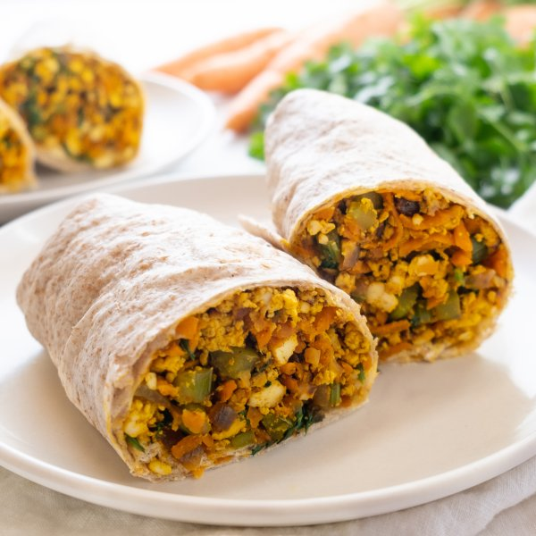

Scrambled Tofu Breakfast Burrito with Carrot, Celery & Cilantro

Prep Time
25 min
Nutrition (per serving)
495.7 kcalCalories
25.2 gProtein
47 gCarbs
25.5 gFat
Full nutrition table
| Calories | 495.7 kcal |
| Total fat | 25.5 g |
| Saturated fat | 3.6 g |
| Trans fat | 0.8 g |
| Cholesterol | 3.1 mg |
| Sodium | 500.9 mg |
| Carbohydrates | 47 g |
| Fiber | 5.5 g |
| Sugars | 7.2 g |
| Protein | 25.2 g |
| Potassium | 718.7 mg |
| Calcium | 422.4 mg |
| Iron | 7.7 mg |
| Vitamin A | 114.6 IU |
| Vitamin C | 15.2 mg |
| Vitamin D | 0.6 IU |
Cookware
Ingredients
- 2 mediumcarrots
- 2 stickscelery
- 1 small bunchcilantro
- 2 (12 oz) pkgextra firm tofu
- 4 clovesgarlic
- 4large flour tortillas
- 1lime
- 1 mediumred onion
- cumin, ground
- curry powder
- extra virgin olive oil
- mayonnaise
- paprika
- soy sauce
- turmeric, ground
Steps
- Cut the tofu in half along the long side. Sandwich between clean towels or paper towels and place on a baking sheet. Place a cutting board with something heavy on top and set aside to press out excess water.2 (12 oz) pkg extra firm tofu
- Meanwhile, wash and dry the fresh produce.2 medium carrots
2 sticks celery
1 small bunch cilantro
1 lime - Preheat a large skillet over medium heat.
- While the skillet heats up, peel and small dice onion.1 medium red onion
- Once the skillet is hot, add oil and swirl to coat the bottom. Add the onion and cook, stirring often, until slightly softened, about 5 minutes.2 tbsp extra virgin olive oil
- Meanwhile, peel and coarsely grate carrots. Trim and mince celery. Add both to the skillet and stir to combine.
- Peel and mince garlic; add to the skillet.4 cloves garlic
- Crumble the tofu with your fingers into the skillet. Add soy sauce and spices; increase heat to medium-high and continue to cook, stirring often, until veggies are soft and tofu begins to brown, about 6 minutes. Remove from heat.¼ cup soy sauce
1 ½ tsp turmeric
1 ½ tsp curry powder
1 ½ tsp cumin
1 ½ tsp paprika - Meanwhile, shave cilantro leaves off the stems; discard stems and mince the leaves.
- Juice lime into the skillet; add cilantro and stir to combine.
- Place tortillas on a flat surface, spread with mayo and top with tofu scramble. Tightly roll to close and cut in half. Enjoy!4 large flour tortillas
4 tsp mayonnaise